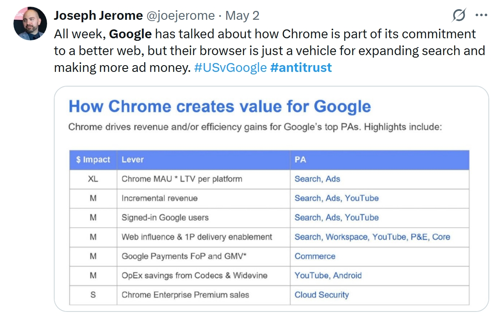

Browsers, and the browser engines that power them, provide critical public infrastructure to over five billion people and yet no one pays for their browser. To cover the high cost of maintaining such highly complex systems, browser vendors and search engine providers have developed a system in which money is levied from search revenue and distributed to browsers. This arrangement benefits both: browsers don’t have an obvious revenue model and web search engines are only relevant to the extent that the web is, which in turn requires a high quality, frictionless browsing experience.
Over the years, this ad hoc system has succeeded in providing funding to browsers but it suffers from a string of issues that produce detrimental effects on the web and the digital sphere in general: lack of transparency, poor funding of browser engines, defunding of other parts of the web, massive market concentration, plummeting search quality, harms to privacy, improved funding for misinformation, reduced revenue for quality journalism, and loss of opinion pluralism.
This report documents the existing system, analyses its negative externalities so as to determine requirements for alternatives, and proposes paths forward. The existing levy distributes billions of USD annually; the objective is not to eliminate it but to place it under the kind of governance that can make it operate in the public interest and in a manner that is resilient to ongoing AI-driven transformations of both browsers and search engines.
Introduction: The Current System
As of 2022, 63% of the world population, or roughly 5 billion people, used the Internet ([internet-users]). While some of these may not regularly use a browser (the application used to navigate the web), all use a browser engine (the software component that both browsers and other apps use to render web content) almost every time they use a device as those are widely used in applications in addition to forming the core of browsers.
Browsers and browser engines are provided to people free of charge, as public goods. Their continued provision is critical since without them the web collapses. They are also complex: for instance, in 2022 Chromium (the browser engine powering Google Chrome and other browsers) ran to about 35 million lines of code which puts it in roughly the same category as operating systems. The exact cost of maintaining the three primary browser engines or of operating a major browser is subject to debate (covered in a later chapter) but even the higher estimates, while significant, amount to only a small fraction of the direct value (monetary or otherwise) produced by the web.
In order to assemble the funds required to operate, almost all browser vendors rely on variations on the same strategy: they exercise an ad hoc levy on search engine revenue. Variations on this levy include selling the search engine default (the initial and typical approach), royalties on search volume, or intra-company transfers (when the search engine and browser belong to the same company). Taken together, these strategies form the AHLD system, which is described further in this report.
Despite its critical importance to web infrastructure, the AHLD system is opaque and poorly documented, and suffers from a number of undesirable shortcomings that have large-scale detrimental effects on the web. This report looks at those issues in detail, establishes requirements from them, and outlines a set of approaches that can produce a solution.
The Mutualistic Web
- Explain that we have a mutualistic ecosystem: the web needs search to be usable, the web needs browsers to be usable, search needs the web to be useful, search needs browsers to make the web successful, browsers need the web to be useful, browsers need search to be usable
- Mutualistic -> Parasitic
- How the web
- killing the web is accelerated by AI but not new to it
- How LLMs may change the model
- https://www.digitaldigging.org/p/how-ai-bots-quietly-dismantle-paywalls
- https://www.economist.com/business/2025/07/14/ai-is-killing-the-web-can-anything-save-it
- LLMs still require control over distribution channels, though they may be more diversified than for web search
- AI Prefs
- Can we pay for summary sources?
- The problem is substitutive use not indexing — can licensing target this?
- Need to make sure this section is tied to browsers
- Tie this to mutualistic web
The Existing Levy
The Ad Hoc Levy on Defaults (AHLD) is a system in which a portion of search engine revenue is levied and used to pay browsers. (It is also used for operating systems and other agents, but our focus in this document is browsers.) The levy can take multiple general forms:
- Default Placement. The browser vendor sells its default search function to a search engine. Defaults have an outsized impact on search volume as few users change them, in part because users don’t necessarily distinguish browser from search since the experience of both is intertwined, and in part because changing the default is made hard. This practice also includes selling a presence (that isn't the default position) on the list of search engine alternatives that browsers provide.
- Royalties. The browser vendor gets a share of the revenue when directing traffic to a given search engine. Royalties and default placements are not mutually exclusive.
- Intra-Company Transfers. The browser vendor and search engine vendor are the same company, and revenue from the latter contributes to paying for the former. In effect, this is a horizontally integrated variant of default placements that is cheaper and of greater strategic value. (For smaller search engines, it may also be the only deal they can make, which drives the existence of the DuckDuckGo or Ecosia browsers.)
These deals are confidential and negotiated bilaterally, and in practice an AHLD agreement between a browser vendor and a search engine vendor can marry aspects from several of these forms.
AHLD levies are economically significant and constitute one of the larger commercial exchanges on the web. For instance, in the year 2021 Google Search spent over $26 billion USD on default placement deals ([26-billion-default]) — which does not include its intra-company transfer costs — and paid 36% of its search advertising revenue made in Safari to Apple ([apple-36]). In 2020, Mozilla made 86% of its revenue from the Google Search levy ([mozilla-revenue]).
Note: As discussed below, the AHLD system is very opaque and most relevant numbers are not available unless they were revealed through legal discovery. Even though some of these numbers are relatively old, interviews with people involved in these deals indicate that the situation has not significantly evolved compared to what information is publicly available.
- do talk about exceptions, like Brave
- https://infrequently.org/2024/03/why-browsers-get-built/
- GLOW — Global Levy for an Open Web
Incumbent Problems
The AHLD levy was an excellent invention and remains a great idea twenty years on. Taking a system view of the web, search is a key logical places at which to apply a levy. Search extracts value from content and behaviour on the web (it would have no value otherwise) and renders it available at a functional choke point (since search is one of the required components of web discovery). In turn, web content is only valuable in the first place because browsers provide critical infrastructure services that render that content available and attractive to people, as well as for the most part safe. Initially, the AHLD produced a virtuous, regenerative cycle: the search levy financed core web infrastructure and that core web infrastructure made the web continuously successful such that search engines enjoyed strong businesses that could then be levied from.
Unfortunately, the AHLD levy has failed to evolve as the web grew from a time of relative infancy when only 14% of the world population (fewer than a billion, [internet-users]) used the Internet to the essential part of society that it is today. Over time, serious shortcomings with this ad hoc approach have surfaced that have not been addressed to date. It is this report’s position that this needs to change if we are to return the web to better health. The changes need not be revolutionary since the core principle — a levy on search to pay for web infrastructure — can readily remain the same and much of the existing system can remain in place. As pressure mounts to address the problems caused by an unmaintained, ad hoc system, if we fail to act we may lose the levy altogether. Should that happen, the web will suffer from the impact on its infrastructure and it may become difficult to maintain a high-quality browser engine, let alone a diverse set of them.
This chapter captures a hopefully comprehensive view of the AHLD’s issues so as to provide a solid shared background from which to produce requirements and improvements.
Artificial Search Monopoly
tk
Last but not least, the manner in which the AHLD system is structured means that it mechanically increases concentration in the search market. Few people change their default search engine (particularly on mobile devices), which means that purchasing a default placement effectively purchases market share. In turn, the search engine with the highest market share has greater profits from which to pay a higher price for further default placements. This eventually leads to almost every browser defaulting to the same search engine, and that search engine dominating the web by insuperable margins. In turn, this artificially-crated and -sustained concentration creates further problems:
- Decreasing search quality. It is both much easier and far more valuable for sites to optimize for a single ranking function that changes occasionally than for many different ones that evolve in different directions. This makes signals of content quality easier to fake, thereby empowering low-quality sites to rate higher. The decrease in search quality ([bad-search]) and the effect of search monoculture on the web ([perfect-webpage]) are well-documented.
- One company pays for all browsers. Every major browser engine and browsers accounting for at least 90% of the market are all paid for by one single search engine. Without ascribing malice or asserting misbehavior, this level of privatized control over critical infrastructure is incompatible with a free and equal Internet.
Unique Source of Funding
tk
- Sankey graph
- what happens when this goes away?
Loss of Pluralism
tk
- Higher misinformation. As signals of quality lose their value, it becomes increasingly easier for misinformation to weave its way into search results.
- Loss of pluralism. A search engine defines an editorial policy: like newspapers or TV channels before it, it determines what is and isn't relevant. The modality differs in that the editorial policy is applied on demand and automatically, but it is no different from and no less subjective than that set by other forms of media. Having close to a single editorial policy for the entire web eliminates media pluralism, which has negative impacts on society and democracy, and leads to privatized censorship.
- Be sure to review dark patterns from Chrome
- Ads about privacy but sending everyone to Google Search is deceptive (can this be evidenced?)
- https://techcrunch.com/2025/08/12/perplexity-offers-to-buy-chrome-for-billions-more-than-its-raised/
- Democratic Resilience and epistemicide
- Algorithmic pluralism (reference work + the open letter)
Opacity
tk
Search is a key architectural component of the web, browsers provide critical infrastructure, but unfortunately there is no transparency into the system. Almost everything that the web community knows about AHLD we know thanks to material released via court cases. If we are to take seriously the W3C's goals of building a web for all humankind, we need to ensure that the web community is able to evaluate how the beating heart of web infrastructure operates.
Unaccountability
tk
There is also no accountability concerning the bilateral ad hoc deals made within AHLD. A search engine may impose additional requirements on browser vendors that might not be in users' best interests (e.g. that the browser must not implement certain privacy protections) without oversight. A system deployed at such a scale needs to be trustworthy.
The system gives power to search engines over how browsers work, including over aspects of browsers that may not seem search-related, for instance privacy features that can be used for advertising attribution may have to be approved by the search engine before they can ship in a browser. The lack of public accountability over the royalties part of the system means that there is a strong information asymmetry between the search engine and the browser in terms of where the royalties come from and what may affect them, which empowers the search engine to threaten potential revenue loss when the browser makes a change they dislike in ways that cannot be verified. Because of this, the search engine is both judge and party in the relationship, and in a position to exert undue influence over browsers.
- detail the privacy issues more, explain it’s from interviews that are kept confidential for obvious reasons
Harms Users and Publishers
tk (or hurts other stakeholders)
It does not respect the priority of constituencies. Search deals made via the levy can have terms that forbid the browser from intervening on the search engine results page (SERP) even when such changes would be beneficial to the user. For instance, a search engine may benefit from making its ads look like search results or from pushing users to be logged in, sacrificing privacy. A browser is expected to counteract such practices, but the AHLD levy prevents that.
The logic of applying a web infrastructure levy on search is because search can be considered to distill the value produced by publishers, ecommerce sites, and content creators. Unfortunately, publishers, ecommerce sites, and content creators have no say in a system eventually build on their work. While indexing content for the purpose of providing links back to the original source is evidently in everyone's interest, the lack of checks and balances in the system has led to a race to the bottom in which search engines provide fewer-and-fewer links back to sources ([amp]) while increasing the number of non-linking purposes for which they process the indexed content, such as generative AI.
- explain web defunding
- collusive
- diagram: needs numbers of supracompetitive prices in ads, how that compares to the rest of the web
- explain lack of intervention in fixing search, notably blocking AI, AMP, ads, etc.
- alignment with Joe’s screenshot

No Browser Governance
tk
Browsers are paid by the AHLD levy and may be subject to private requirements imposed by search engines, but from the perspective of the web community no requirements are placed on browsers in exchange for benefitting from the system.
Browser Engine Financing
tk
The levy system pays for browsers but it does not pay for browser engines. Browser engines are the more complicated component and ought to be supported directly. As things stand, abrowser can use an open source browser engine, collect funds from the levy, but not contribute anything back to the browser engine. This free riding is detrimental to the maintenance of a rich ecosystem of browser engines.
Other Web Infrastructure
tk
Worryingly, most appropriated funds don't go towards web infrastructure. While the purpose of the levy is manifestly to support web infrastructure, the overwhelming majority of funds is directed elsewhere. To take but one example: based on 2021 numbers, of the $26 billion USD that Google Search paid in levy, $18 billion went to Apple (about 70%). There is scant evidence that Apple, a publicly-traded company, spends in the vicinity of $18 billion USD per year on web infrastructure. The levy therefore suffers from very low efficiency, and in turn this causes value produced on the web to be directed outside of the web, which subsidizes its proprietary competitors.
Effect on AI
tk
How Much Does A Browser Cost?
- Brian
- Workshop on funding
- Alissa
- Tara
- Alex Russell
- Try to summarise this
Requirements
- What do we need from this?
- We need a mutualistic system that works
- Explain this for all three constituencies (be a bit more precise about “the web”, perhaps detail people rather than systems?)
Solution Space
Fiduciary UA
- explain, summarise, This matters because you can't just default to a bad solution under these conditions
- DFA as vehicle
- This includes AI agents
Global Levies
- Explain existing ones
- Transnational taxation
Enforcement Through Choice Screens
- DMA choice screens
- How this would work
- Mozilla report
- DDG work
Next Generation
- Browsers are old and boring, and they are controlled
- Newer browsers atop networks that have runtime covenants
Can Search Not Kill The Web?
Governance of the Levy
- How does this not break browsers with bad ideas (explain history of failed standards — the value and problems of market-backed standards)
- How do funds get distributed
- How to avoid corruption
- “Apple and Google don’t come here to be forced”
- jurisdictional concerns
- conditionalities
- the idea of runtime governance vs static governance, democratic vs voluntary standards
Acknowledgements
Many former or current employees from browser vendors and search engines large and small provided crucial information on condition of anonymity. I am deeply thankful for the time you gave me and you dedication to fixing this arrangement, even though your employers benefit from it.
Many thanks to all the participants in the lively and highly-attended browser funding workshop at Web Engines Hackfest 2025 — this document surfaces many of your views — and to Igalia for their warm welcome and outstanding organisation. Special mentions to Brian Kardell, Eric Meyer, Stephanie Stimac, and Xan López for your contributions to browser funding issues and precious conversations. My heartfelt thanks as well to the participants of the KGI workshop on search remedies, and in particular to Alissa Cooper.
The following people (in alphabetical order) have provided invaluable input into this draft: Dietrich Ayala, Ian Brown, Matthew Frehlich, Mark Nottingham, and Max Gendler.
Finally, special thanks for the Digital Infrastructure Insights Fund (DIIF), particularly to Katharina Meyer, for funding this report. I had a great time meeting and exchanging with others in my cohort.
References
- [26-billion-default]
- Google paid a whopping $26.3 billion in 2021 to be the default search engine everywhere. David Pierce. 2023-10-27. https://www.theverge.com/2023/10/27/23934961/google-antitrust-trial-defaults-search-deal-26-3-billion
- [amp]
- Accelerated Mobile Pages. Google. Proprietary Format. https://amp.dev/
- [apple-36]
- Apple Gets 36% of Google Revenue in Search Deal, Expert Says. Leah Nylen. 2023-11-13. https://www.bloomberg.com/news/articles/2023-11-13/apple-gets-36-of-google-revenue-from-search-deal-witness-says
- [bad-search]
- How bad are search results?. Dan Luu. https://danluu.com/seo-spam/
- [internet-users]
- Individuals using the Internet (% of population). International Telecommunication Union (ITU) World Telecommunication/ICT Indicators Database (via The World Bank). 2022. https://data.worldbank.org/indicator/it.net.user.zs?end=2022&start=1960&view=chart
- [mozilla-revenue]
- Mozilla expects to generate more than $500M in revenue this year. Frederic Lardinois. 2021-12-13. https://techcrunch.com/2021/12/13/mozilla-expects-to-generate-more-than-500m-in-revenue-this-year/
- [perfect-webpage]
- The Perfect Webpage. Mia Sato. https://www.theverge.com/c/23998379/google-search-seo-algorithm-webpage-optimization